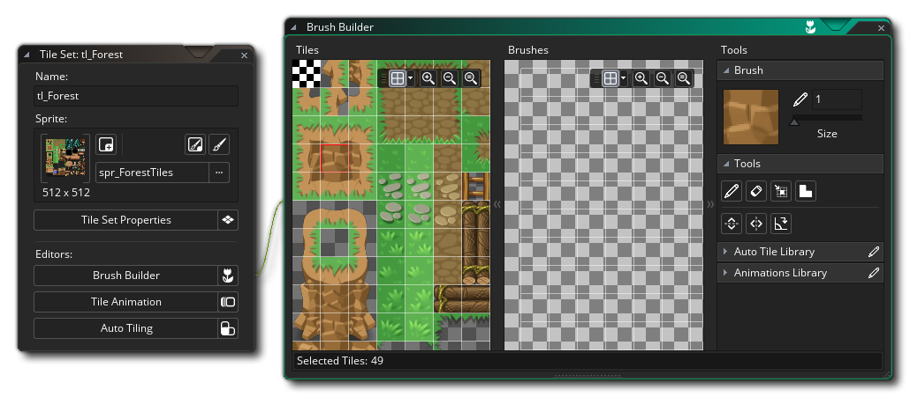
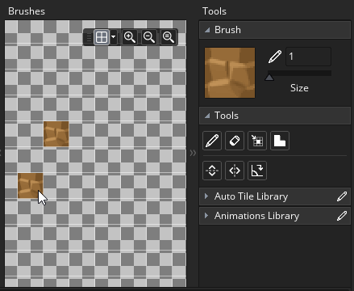
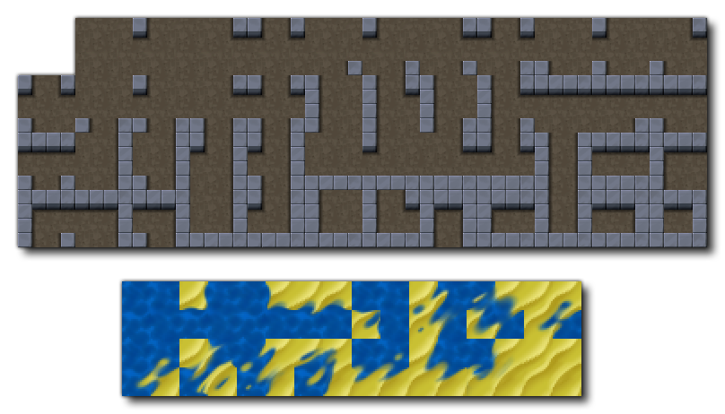
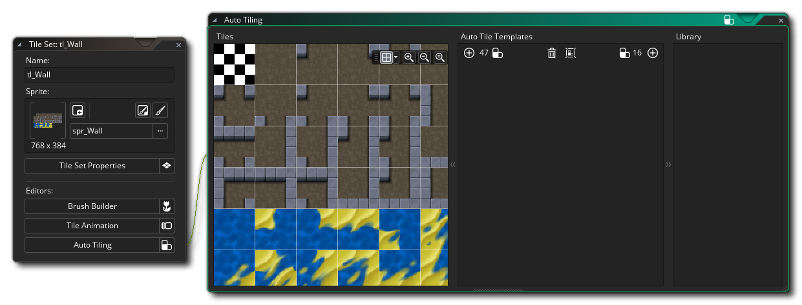

Un ensemble de tuiles est une ressource graphique pour dessiner des niveaux et d'autres composants statiques de votre jeu. Un ensemble de tuiles est composé d'une seule image qui est ensuite divisée en différentes "cellules" (tuiles), et chaque tuile peut être placée dans l'éditeur de pièce pour créer une image complète. Vous pouvez voir ci-dessous deux exemples de sprites pouvant être utilisés comme ensembles de tuiles:
Un ensemble de tuiles est une ressource graphique pour dessiner des niveaux et d'autres composants statiques de votre jeu. Un ensemble de tuiles est composé d'une seule image qui est ensuite divisée en différentes "cellules" (tuiles), et chaque tuile peut être placée dans l'éditeur de pièce pour créer une image complète. Vous pouvez voir ci-dessous deux exemples de sprites pouvant être utilisés comme ensembles de tuiles: 
Ce sont les manières les plus courantes de créer des ensembles de tuiles, que ce soit toutes assemblées ou avec de petits espaces les séparant, et GameMaker Studio 2 peut gérer les deux types. Essentiellement, tous les tilesets doivent être composés d'images qui correspondent à une grille clairement définie, chaque cellule de la grille ayant exactement la même taille (notez que si les images ci-dessus sont toutes composées de carreaux carrés, un jeu de carreaux peut être fait tuiles rectangulaires aussi). Lors de la création de vos tilesets, gardez à l'esprit que la cellule en haut à gauche doit toujours être vide car c'est la tuile que GameMaker Studio 2 utilisera pour les tuiles "vides" dans une pièce et pour effacer les tuiles existantes (et même si cette partie de l'image ils seront ignorés).
Lorsque vous créez une ressource de jeu de carreaux pour la première fois, la fenêtre de l'éditeur de jeu de carreaux s'ouvre avec les options suivantes:
Ici vous pouvez donner un nom à votre jeu de tuiles. Les noms peuvent uniquement être alphanumériques et ne peuvent utiliser que le symbole "_", et ils ne peuvent pas commencer par un nombre.
Ici vous pouvez sélectionner la ressource d'image-objet à partir de laquelle créer notre jeu de tuiles. En cliquant sur le bouton principal, vous ouvrez l' Explorateur d'actifs dans lequel vous pouvez choisir l'image-objet que vous souhaitez utiliser pour l'ensemble de tuiles:
Vous pouvez également cliquer sur le bouton Nouveau Sprite
bouton pour créer une nouvelle ressource sprite (qui ouvrira l'éditeur de sprite pour la nouvelle ressource dans l'espace de travail pour la modification), ou vous pouvez modifier l'image-objet actuellement sélectionnée à l'aide du bouton Modifier le sprite
ou choisissez même de modifier l'image de l'image-objet dans l'éditeur d'images en appuyant
bouton.
Par défaut, lorsque vous ouvrez un jeu de cases, la fenêtre Propriétés du jeu de cases s'affiche également (voir ci-dessous), mais si vous le fermez, vous pouvez cliquer sur le bouton ici pour le rouvrir.
La fenêtre Propriétés du jeu de tuiles sert à désigner la taille de la tuile de base (16px carré par défaut), la quantité de décalage et la séparation entre les tuiles (ces deux dernières options sont utilisées avec les sprites des tuiles). Vous pouvez également définir les valeurs de bordure de sortie pour l'image du jeu de vignettes, qui contrôle la façon dont l'image sera stockée sur le disque et ajouter des pixels supplémentaires autour de chaque vignette, selon les besoins.
En raison de la façon dont les carreaux sont rendus, ils doivent être préparés à l'avance avec une bordure autour de chacun pour "enduire" les bords. L'image ci-dessous illustre la manière dont les vignettes sont généralement mappées par les pilotes graphiques de l'appareil, la ligne rouge entourant la mosaïque indiquant les coordonnées U, V (les lettres «U» et «V» sont utilisées pour décrire la texture 2D mesh car "X", "Y" et "Z" sont déjà utilisés pour décrire les coordonnées spatiales de la pièce et de l'objet):
Comme vous pouvez le voir il choisit le centre du texel (un texel est juste un pixel dans une carte de texture) pour mapper directement quand dessiner l'image dans la pièce. Maintenant, à l'échelle de 1: 1, tout va bien, mais que se passera-t-il lorsque nous redimensionnerons cette tuile? Le problème avec la réduction est que lorsque vous rétrécissez, les UV diminuent et tentent de s'adapter à un espace plus compressé, mais cela ne peut évidemment pas se produire, le pilote graphique sélectionne les texels à dessiner en fonction des centres de pixels disponibles. Donc, si nous "passons" simplement dans un nouveau pixel d'écran, les pilotes graphiques utiliseront le centre du pixel pour décider avec quoi dessiner, il choisira un texel entourant la dalle, pas un texel sur la dalle elle-même.
L'illustration ci-dessus montre une vignette réduite en 6 pixels d'écran, ce qui montre que lorsque vous vous chevauchez un peu dans le pixel d'écran suivant, le pilote graphique doit choisir de laisser tomber ce texel, ou de le remplir avec ce qu'il pense est un texel valide. Disons simplement que dans ce cas, il décide de dessiner le texel qui se chevauche dans le pixel de l'écran, et puisqu'il est maintenant clairement en dehors de notre tuile, il obtient ce pixel de la prochaine tuile, ou les petits espaces que vous avez fournis autour des tuiles, ce qui signifie que quand il rétrécit, vous aurez des fissures entre les briques "pépins" dans la façon dont ils sont dessinés et c'est là que beaucoup de confusion se pose... Chaque pilote graphique et périphérique fait cela à sa manière, ce qui signifie que les résultats peut être imprévisible et avoir l'air terrible... mais si vous êtes prudent et planifiez à l'avance, vous pouvez contourner ce problème.
Avec les jeux haut de gamme si vous dessinez à partir d'une seule texture (pas sur une page de texture ou un atlas de texture), vous avez la possibilité d'utiliser un mode de texture appelé pince et de répéter la dernière rangée de texels vous permettant d'évoluer sans problème car cela oblige le matériel à obtenir la dernière rangée de pixels, quoi qu'il arrive. Voici ce que les paramètres Bordure de sortie ici font pour vous:
Voici un sprite de tuile "fixe" et vous pouvez le voir maintenant une section répétée autour de chaque tuile, ce qui signifie que lorsque le matériel dépasse, il choisira toujours le dernier texel de la tuile plutôt que l'un des espaces ou la tuile après. Par conséquent, lorsque vous créez un jeu de tuiles, gardez à l'esprit que si vous allez agrandir ou réduire la vue du jeu ou que vous allez redimensionner les vignettes, vous devrez peut-être avoir une largeur ou une hauteur de bordure supérieure à la valeur par défaut valeur de 2.
L'option finale dans les propriétés de l'ensemble de tuiles est Disable Source Sprite Export. Ceci est vérifié par défaut, et ce qu'il fait est des indicateurs de la ressource sprite source à omettre lorsque la page de texture pour votre projet est en cours de génération. Cela fonctionne sous l'hypothèse qu'un sprite utilisé comme un jeu de tuiles ne sera pas utilisé pour autre chose, et ne doit donc être exporté qu'une seule fois. Toutefois, si vous utilisez la ressource d'image-objet de base pour autre chose que des mosaïques, vous souhaiterez la décocher pour que l'image-objet de base et l'ensemble de mosaïques soient tous deux ajoutés dans la page de texture lors de la compilation.
Chacun des boutons de la section Editeurs ouvre un éditeur différent pour des fonctionnalités de jeu de tuiles spécifiques. Vous pouvez créer des pinceaux de mosaïques sur la base de plusieurs mosaïques, des mosaïques animées, en utilisant des mosaïques différentes en tant qu'ensembles individuels, et vous pouvez également créer des mosaïques auto qui «se lient» en fonction des mosaïques qui les entourent. Chacun de ces éditeurs est expliqué en détail ci-dessous.
Ce sont les outils que vous pouvez utiliser pour prévisualiser l'image-objet sélectionnée pour l'ensemble de tuiles. Vous pouvez les utiliser pour zoomer et dézoomer (avec
/
+ la roue de la souris
) ou utilisez le
pour le faire à nouveau 1: 1. Vous pouvez également cliquer sur le bouton Adapter à la fenêtre
pour adapter la toile entière de la pièce à l'espace de travail de l'éditeur en cours (cela fera un zoom avant / arrière selon le cas pour l'ajuster).
Une autre caractéristique est que vous pouvez activer ou désactiver la vue de la grille en cliquant sur
bouton, ainsi que la couleur de la grille à utiliser (en cliquant sur
bouton). Lorsque la grille est active, elle affiche un contour coloré pour chacune des cases de la grille, en respectant les paramètres de séparation, etc. Vous pouvez modifier la couleur et l'alpha de la grille en cliquant sur la flèche à côté de l'icône Grille.
Cette section est la fenêtre Aperçu du jeu de carreaux. Vous pouvez utiliser le bouton du milieu de la souris


Éditeurs de carreaux
Une fois que vous avez configuré les propriétés de base de votre jeu de vignettes dans l'éditeur principal, vous pouvez ouvrir l'un des trois autres éditeurs pour ajouter d'autres informations sur le jeu de vignettes. Chaque éditeur correspond à une fonctionnalité différente, mais tous sont basés sur l'image sélectionnée pour l'ensemble de tuiles. Ainsi, vous pouvez avoir un seul grand jeu de tuiles et y incorporer vos carreaux automatiques et vos carreaux animés, etc... Les sections ci-dessous expliquent chacun des éditeurs en détail:
Par défaut, lorsque vous "peignez" des carreaux sur une couche de tilemap dans l'éditeur de pièce, vous sélectionnez une seule carreau et peignez avec cela. Cependant, les tilesets sont presque toujours conçus pour avoir des sections qui s'emboîtent de différentes manières pour former des sections entières. Par exemple, un jeu de tuiles RPG peut avoir des mosaïques de fonctionnalités de paysage qui peuvent être connectées pour créer des entités plus grandes ou plus petites en fonction du nombre de tuiles utilisées. Maintenant, en plaçant plusieurs fonctionnalités comme celle-ci sur une couche de pièce, vous devrez faire plusieurs va-et-vient pour changer de tuile, ce qui n'est pas bon pour votre flux de travail. Pour résoudre cela, nous avons ajouté des pinceaux de tuiles à l'éditeur de jeu de tuiles, disponible lorsque vous cliquez
sur le bouton Brush Builder: 
Dans le Brush Builder, vous disposez du jeu de tuiles d'origine sur la gauche et d'un "canvas" vide sur la droite. Vous pouvez maintenant sélectionner n'importe quelle case à partir de la gauche et la peindre sur la droite pour créer des "pinceaux" personnalisés que vous pouvez ensuite utiliser dans l'éditeur de pièce. Notez que vous pouvez cliquer et maintenir le bouton gauche de la souris
+
Sur la droite, vous pouvez voir trois caractéristiques que nous avons faites (en surbrillance orange dans l'image). Remarquez comment nous avons laissé un espace d'une case entre chaque entité - ceci est dû au fait que tout groupe de tuiles touchant sera traité comme un seul pinceau dans l'éditeur de salle, nous laissons donc un espace d'une case pour montrer que chaque ensemble est un brosse distincte que nous voulons créer. En créant vos pinceaux, vous peignez avec le bouton gauche de la souris
. Vous pouvez également zoomer sur la feuille de mosaïque ou sur la toile de la brosse en utilisant
ou le bouton du milieu de la souris
En haut à droite, vous pouvez voir l'outil actuellement sélectionné, et vous pouvez également définir la taille de la brosse avec laquelle vous voulez peindre. La taille par défaut est 1, qui est une seule tuile, mais si vous la définissez à des valeurs plus élevées, vous pouvez peindre (et effacer) avec une plus grande brosse composée de la tuile sélectionnée répétée, comme indiqué dans l'image ci-dessous: 
La boîte à outils est l'endroit où vous pouvez sélectionner l'outil à utiliser pour de nombreuses tâches différentes dans l'éditeur de jeu de carreaux, dont certains dépendront de si vous avez quelque chose de défini dans votre bibliothèque autotile. Un bref aperçu de chaque outil est donné ci-dessous (notez que lorsque vous avez sélectionné un calque de tuiles dans l' éditeur de pièce, alors cette boîte à outils est affichée en haut de l'espace de travail de la pièce):
Ceci est l'outil de crayon. Il utilise la vignette sélectionnée pour peindre dans l'éditeur de pièce avec le bouton gauche de la souris Avec l'outil Gomme, vous pouvez utiliser le bouton gauche de la souris C'est l'outil de sélection, qui peut être utilisé pour définir une zone de la couche de tuile pour travailler. Vous pouvez cliquer sur le bouton gauche de la souris . Lorsque vous avez sélectionné une zone d'une couche de tuiles, le reste des outils (Crayon, Retourner, Tourner, etc...) ne fonctionnera que dans la zone sélectionnée. Notez que vous pouvez également copier (
En cliquant sur cet outil, vous activez le style de peinture Auto-carrelage. Lorsque cette option est active, vous pouvez sélectionner n'importe quelle mosaïque de la bibliothèque Autotile, puis la peindre dans la couche de pièce et GameMaker Studio 2 la modifiera automatiquement pour correspondre aux mosaïques environnantes, à condition que vous ayez correctement configuré l' onglet Mosaïque automatique. Cliquer sur l'outil Flip avec le bouton gauche de la souris Cliquer sur l'outil Miroir avec le bouton gauche de la souris Cliquer sur l'outil Rotation avec le bouton gauche de la souris Sous les outils, vous pouvez trouver deux sections différentes pour sélectionner un autotile ou des mosaïques animées qui ont été créées en utilisant l'image de mosaïque en cours. Un seul sprite utilisé pour un ensemble de tuiles peut contenir beaucoup, beaucoup, d'images individuelles, et celles-ci peuvent être combinées dans l'éditeur Animation ou Autotile pour créer des pinceaux personnalisés qui apparaîtront dans ces sections et peuvent être utilisés conjointement avec des tuiles statiques régulières pour créer des pinceaux (notez qu'une tuile animée s'anime indépendamment du fait que vous l'ayez sélectionné dans la bibliothèque ou dans le jeu de tuiles de base).
Une fois que vous avez configuré tous les pinceaux dont vous avez besoin, vous pouvez les utiliser pour peindre des carreaux sur n'importe quelle couche de tilemap dans l'éditeur de pièce.
Les tuiles sont généralement considérées comme des cellules statiques dans la salle de jeu, mais avec GameMaker Studio 2 il est possible de les animer, comme vous le feriez avec un sprite. Pourquoi ne pas simplement utiliser des sprites, demandez-vous? Eh bien, les sprites ont un certain temps de traitement parce qu'ils sont associés à une boîte englobante et à la façon dont ils sont rendus, mais les tuiles ont un temps de traitement beaucoup plus faible et sont donc plus rapides à rendre. Cela a cependant un prix, car avec les animations de jeu de carreaux, vous êtes limité à la création d'animations qui doivent avoir une puissance de deux - c'est-à-dire: de 2, 4, 8, 16, etc... cadres - et elles doivent évidemment être créé dans la grille de tuiles, et ils doivent tous animer à la même vitesse (sur une base par jeu de tuiles). Cependant, même avec ces limitations, les mosaïques animées sont une fonctionnalité puissante qui peut être utilisée pour ajouter de la vie et de la couleur à des environnements et arrière-plans statiques.
Pour créer une animation de tuile, vous devez d'abord avoir un ensemble de tuiles qui contient les tuiles requises dans une image de sprite (mais pas comme des images-objets, donc une seule grande image-objet avec toutes les images d'animation), et ensuite set editor vous cliquez sur le bouton Tile Animation pour faire apparaître l' éditeur d'animation:
L'image d'exemple ci-dessus est une image unique avec toutes les images d'animation contenues, mais il est à noter que l'image peut également contenir d'autres carreaux de non-animation, car vous pouvez utiliser un seul ensemble de tuiles les parties dont vous voulez créer l'animation. Par exemple, vous pourriez avoir une grande mosaïque de paysage avec des arbres, de la terre et de l'eau, et dans l'ensemble de carreaux, il y aurait plusieurs carreaux à animer pour faire onduler l'eau.
Pour créer une animation de tuile, vous devez d'abord ajouter une animation à la bibliothèque d'animation en cliquant sur le bouton Ajouter une animation.
, qui ajoutera une bande d'animation vide à la bibliothèque et vous demandera de sélectionner un nombre d'images à utiliser:
Vous serez ensuite présenté avec une vue de chaque cadre d'animation vide, avec le cadre initial mis en évidence pour vous:
Si vous revenez à l'image de la mosaïque située à gauche de l'éditeur, vous pouvez cliquer sur n'importe quelle mosaïque pour l'ajouter à l'animation et l'image passera à la suivante. Cliquez sur les vignettes successives pour remplir l'animation, que vous pouvez ensuite prévisualiser en cliquant sur le bouton "play" à côté des cadres:
Une fois que vous avez fait cela, votre animation fera partie de la bibliothèque d'animation et quand vous entrez dans l'éditeur de pièce, vous pouvez le sélectionner et le placer dans la pièce. Notez que si vous sélectionnez l' une des mosaïques d'une animation à placer dans une pièce, cette mosaïque s'anime à partir de la mosaïque, vous pouvez donc désynchroniser une animation en plaçant des images séparées dans la pièce et elles s'animeront toutes. Le seul inconvénient à cela est que la vitesse d'animation sera toujours la même, puisqu'elle est définie pour l'ensemble de tuiles et non pour les animations individuelles dans la bibliothèque.
Quelques points à noter sur les tuiles utilisées dans les animations:
- Si la mosaïque a sa propre animation spécifiée (il y a donc une animation où elle est définie comme première mosaïque), elle utilisera cette animation.
- Si la mosaïque n'a pas sa propre animation mais est utilisée dans une seule autre animation, elle utilisera cette animation à partir de la première position de cette mosaïque dans l'animation.
- Si la vignette n'a pas sa propre animation et est utilisée dans plusieurs autres animations, elle ne s'anime pas du tout. Vous devrez spécifier explicitement une animation avec la première mosaïque.
La fonction Auto Tile est un outil incroyablement puissant qui peut être utilisé pour faciliter la construction de niveaux, que ce soit pour un projet de haut en bas ou de côté à vue. Essentiellement, vous créez une bibliothèque autotile, et chaque fois que vous posez une mosaïque de cette bibliothèque, elle se «connecte» avec les mosaïques qui l'entourent pour créer un mur ou une plate-forme homogène.
Cependant, avant de commencer à utiliser la fonction Autotile, il est très important que vous ayez correctement configuré le sprite du jeu de vignettes et que vous choisissiez un type d'autotile approprié. Les types disponibles sont 47 autotiles de tuiles, ou 16 autotiles de tuiles, avec (en général) 16 tuiles étant utilisées pour le haut (puisqu'elles donnent de plus belles transitions) et 47 étant utilisées pour des vues de plate-forme / side on, mais ce n'est pas signifie une règle stricte et dépendra de la façon dont vous voulez que votre projet final ressemble.
L'image ci-dessous montre un ensemble de tuiles de 47 tuiles et de tuiles de 16 tuiles typiques pour l'autotivage: 
Maintenant, le simple fait de regarder les images ne vous dit pas vraiment comment elles vont s'emboiter. Nous allons donc ouvrir l'éditeur Autotile à partir de l'éditeur Tile Set et les ajouter. L'éditeur Autotile ressemble à ceci: 
Notez que le sprite utilisé a TOUS les carreaux dont nous avons besoin (et peut aussi avoir d'autres carreaux, puisque vous pouvez choisir ceux qui seront dans l'autotile). Vous pouvez maintenant cliquer
Dans le modèle, la zone gris clair représente le bord extérieur de la tuile utilisée et le gris foncé est la zone de «remplissage». Pour ajouter une mosaïque dans le modèle, cliquez simplement sur la première cellule de modèle disponible, puis sélectionnez la mosaïque à ajouter à partir de la gauche:
Si vous faites une erreur, sélectionnez simplement l'autotile que vous voulez supprimer et sélectionnez la vignette "vide" du jeu de tuiles. Après les avoir tous ajoutés, vous pouvez cocher les cases par rapport au modèle en cliquant sur le bouton "Afficher le modèle".
en haut, et cela va basculer la superposition de gabarit sur l'autotile final, comme indiqué dans l'image ci-dessous:
Si vous voulez faire un autotile de 16 tuiles, la procédure est exactement la même que celle expliquée ci-dessus, seulement au lieu d'utiliser le modèle de tuile 47 vous utilisez le modèle de tuile 16:
Nous avons maintenant des autotiles dans notre bibliothèque autotile tirée d'un jeu de tuiles. Ceux-ci peuvent être utilisés dans l'éditeur de pièce en créant simplement une couche de tilemap puis en sélectionnant l'un des autotiles de la bibliothèque (qui sélectionne automatiquement le pinceau autotile en haut de l'éditeur) et en peignant dans votre pièce. Les tuiles vont maintenant s'auto-magiquement se connecter pour créer des cartes de tuiles correctement séquencées.
Veuillez noter que le comportement d'un autotile autour des bords de la pièce dépendra du bouton Ouvrir ou Bords fermés
. Par défaut, quand un autotile est placé le long du bord d'une pièce, il choisira une tuile comme si l'extérieur de la pièce était vide (c'est-à-dire: cela donnera à la pièce un "bord"). Cependant, si vous cliquez sur ce bouton, l'autotile va coller la pièce comme si la zone à l'extérieur était remplie de tuiles et donc choisir des tuiles qui se mélangent et n'ont pas de "bord".